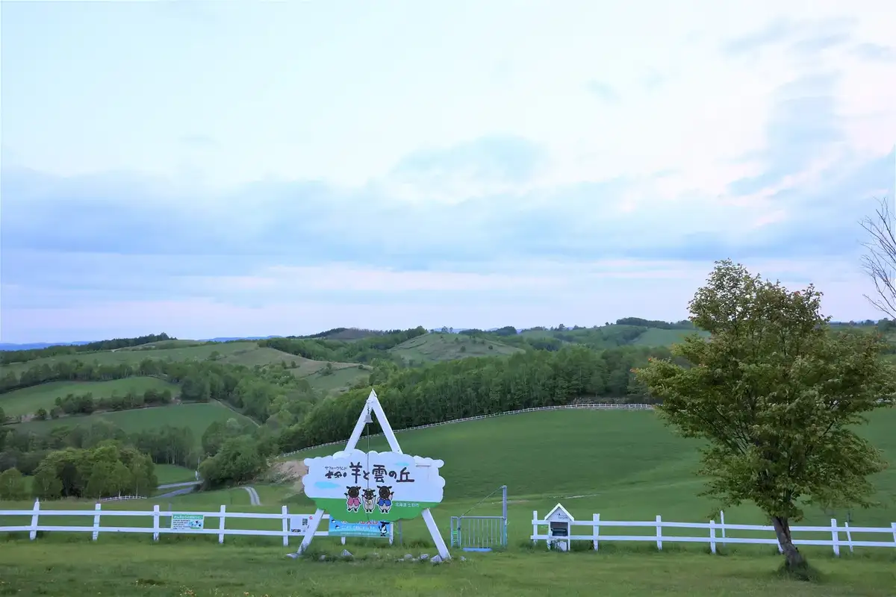
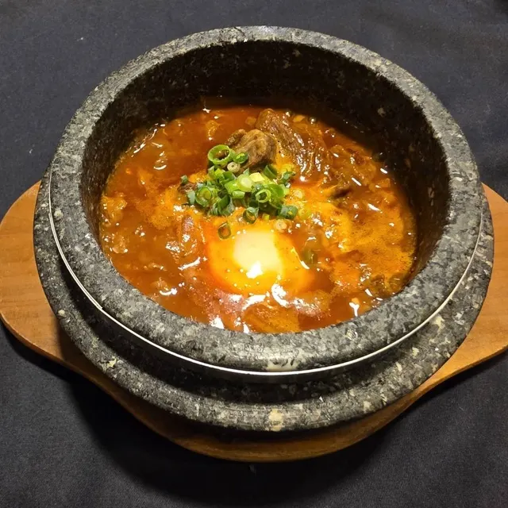
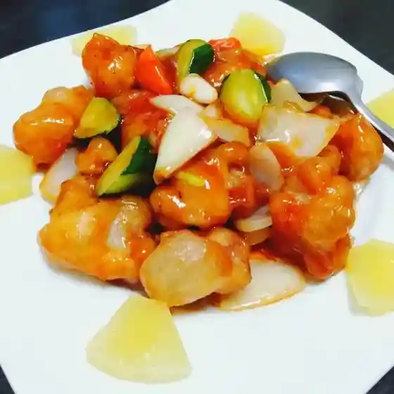
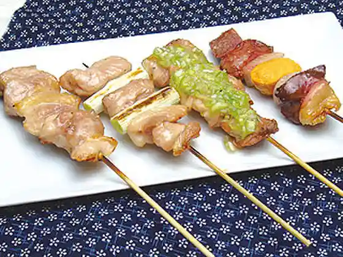
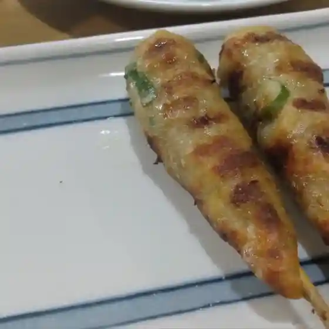
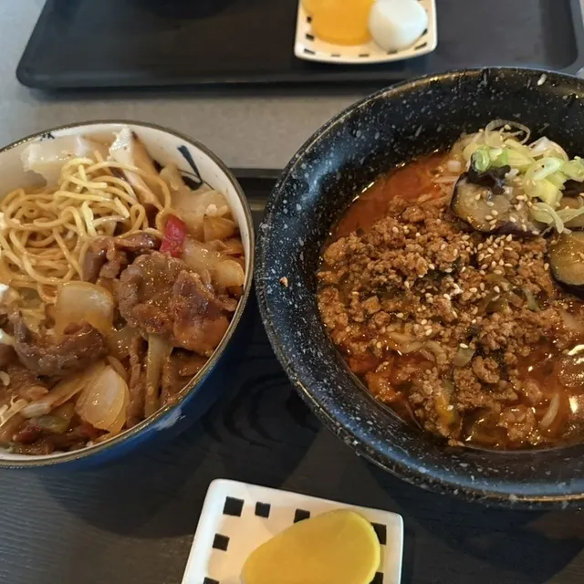
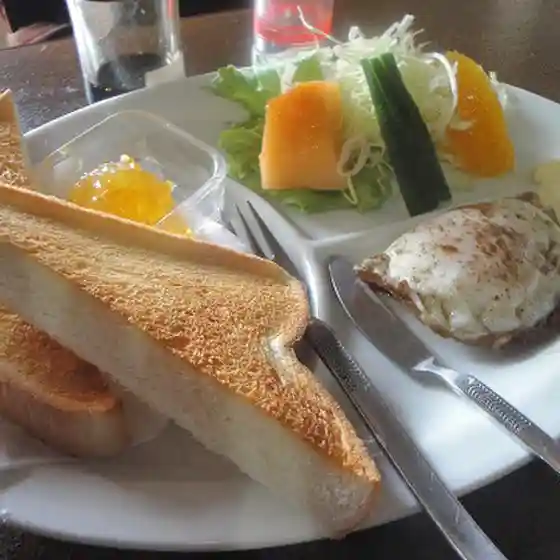

Shibetsu
Shibetsu · Hokkaido
Shibetsu
Highlighted on the Hokkaido map.

Stay
Dining
炭火焼肉 いち

Sumibi Yakiniku Ichi
風彩

Kaze Sai
華中華料理

Kachuu Hana Ryouri
串屋咲夢来

Kushi Ya Saki Yume Rai
壺庵

Tsubo Iori
かわせみ

Kawasemi
ABC

Abc
シルク

Shiruku
蔵
Kura
Chillin
Chillin
こぐまグループ旭川ラーメン 士別店
Koguma Guruupu Asahikawa Raamen Shibetsu Mise
居酒屋やまもと
Izakaya Yamamoto
き助
Ki Jo
若寿し
Wakaju Shi
士別 生鮮市場
Shibetsu Seisen Shijou
旅館まるいし
Ryokan Maruishi
道の駅 羊のまち 侍・しべつ
Michi No Eki Hitsuji Nomachi Samurai Shibetsu
マッケンジーファーム
Makkenjiifaamu
北の食房 ふくろう
Kita No Shoku Bou Fukurou
村瀬製パン所 ムラセパン
Murase Seipan Tokoro Murasepan
赤ばね
Aka Bane
セイコーマート 士別西店
Seikoomaato Shibetsu Nishi Mise
てっ士亭
Tetsu Samurai Tei
長男坊
Chounan Bou